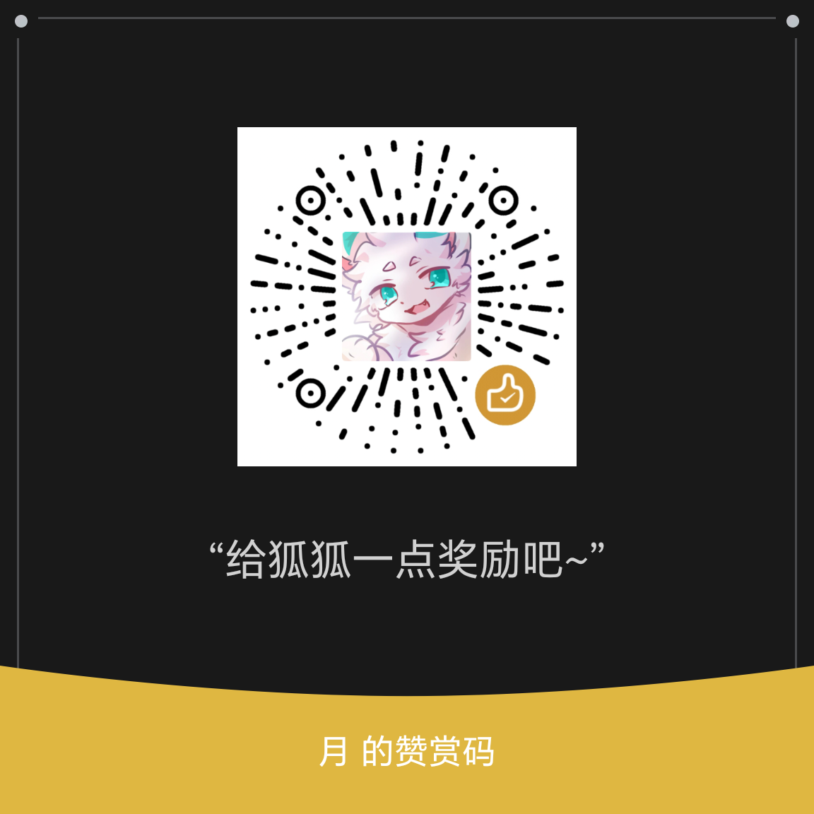

◈
自适应降噪
根据局部方差判断平坦区与边缘，压制噪点和 JPEG 压缩块，同时保留真实纹理。
基于 C++ 原生图像引擎：自适应降噪、Lanczos3 重采样、边缘锐化。
提交任务即返回，异步处理，结果只保存在你自己的会话空间。
修复站通过 TCP 隧道直连自建服务器，首次打开可能稍慢；若主线路无响应，请切换到备用线路。
根据局部方差判断平坦区与边缘，压制噪点和 JPEG 压缩块，同时保留真实纹理。
三次插值核 + 归一边缘权重，放大后线条依旧干净，不产生明显锯齿与振铃。
非锐化掩模按照片 / 动漫 / 文字场景调整强度，让眼睛、文字和轮廓更清晰。
上传后立即返回任务号，工作线程池后台处理，页面实时轮询进度，无需等待响应。
每个访客拥有独立会话目录，任务与结果仅本人可见、可下载，互不干扰。
结果文件默认保留 2 小时，过期自动删除；单用户并发与每日次数均有配额保护。
点击上方入口，通过 TCP 隧道进入自建服务，页面直接加载。
拖拽、点击或 Ctrl+V 粘贴图片，选择 1×–4× 放大和修复模式。
处理完成后拖动中间滑杆查看前后差异，满意就直接下载高清图。
MAX-PX 完全免费、无广告、无需登录。如果它帮你救回了一张珍贵的照片，欢迎扫码赞赏，支持服务器与带宽开销。

从一张模糊的老照片开始。
进入 MAX-PX 修复站